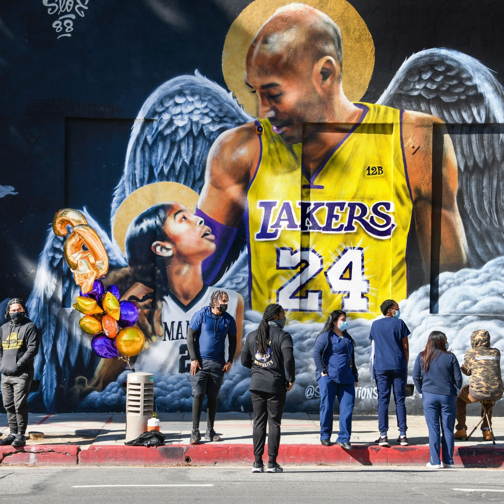
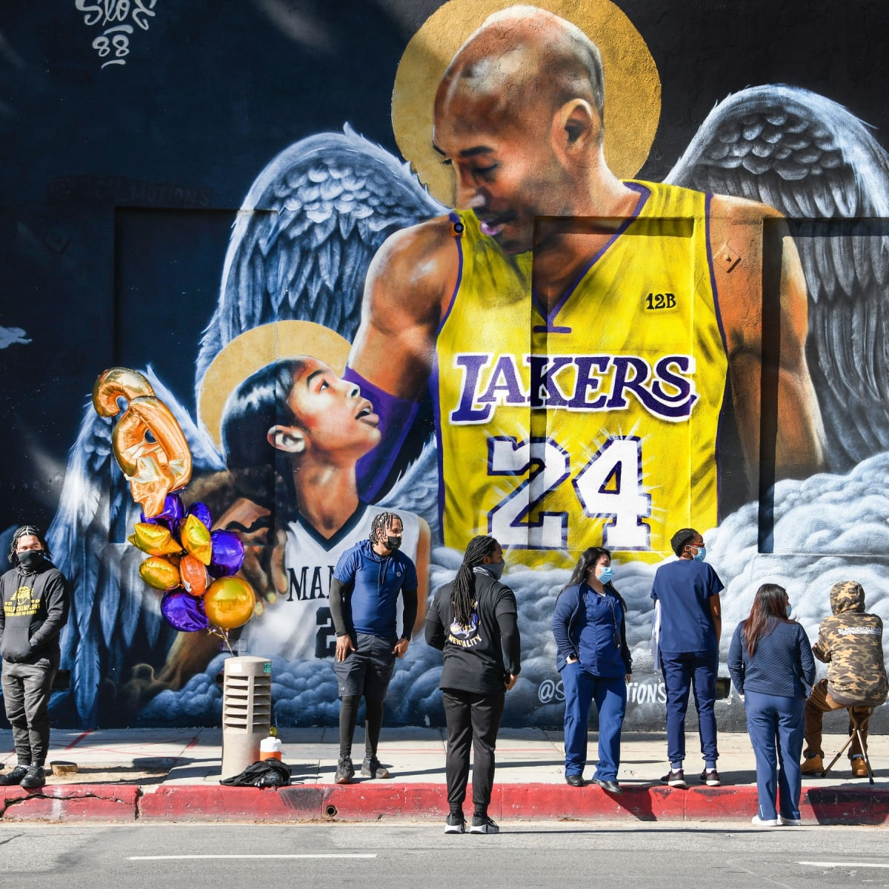

On October 2nd and 3rd, the Mamba & Mambacita Sports Foundation (MMSF) hosted its first inaugural basketball camp, the Mamba and Mambacita Sports Foundation Skills Academy, at the Ladera Sports Center in Orange County, California. MMSF partnered with the Boys and Girls Club to invite 11–13-year-old young boys and girls. The clinic and camp included participants from all skill levels. “You don’t have to be the best player on the court for this experience to be valuable,” MMSF Chairman and President, Vanessa Bryant, told campers. “We want you to be the best versions of yourselves. It’s okay to make mistakes and ask questions. Just be open to learning how to make those mistakes better. Everyone is here to support you.” Teams were inclusive of both boys and girls, eliminating gender distinction and providing equitable experiences. “The Skills Academy is co-ed because it was important to Gigi and Kobe to play together. At this age, a lot of kids grow up thinking they have to play boys vs. girls and that’s just not the case. You are stronger together,” said Bryant. Founded through the loving memory of Kobe and Gianna “Gigi” Bryant, the Mamba and Mambacita Sports Foundation (MMSF) is a 501c3 nonprofit organization dedicated to creating positive impact for underserved athletes and young women in sports. “Many families in the communities served by the Boys and Girls Club of Orange County are still reeling from the COVID-19 crisis, and oftentimes these chapters are overlooked by donor funding and incorrectly perceived as located in wealthy communities,” said MMSF Executive Director Kat Conlon. “Serving the young people in these areas has never been more important. As COVID-19 carries on across the country, so does the need for food, childcare, and educational support for young people, especially in the underserved locations of Orange County.” The event welcomed inspirational chats with WNBA Stars Sabrina Ionescu, Jewell Loyd, and Los Angeles Lakers GM Rob Pelinka. Supporting partners included StubHub, BODYARMOR, Champion, Spalding, and Life360. Kobe and Gigi’s vision was to create a world where young women had equal opportunity to pursue their dreams through sports. The foundation honors their legacy by funding programs that support their vision.